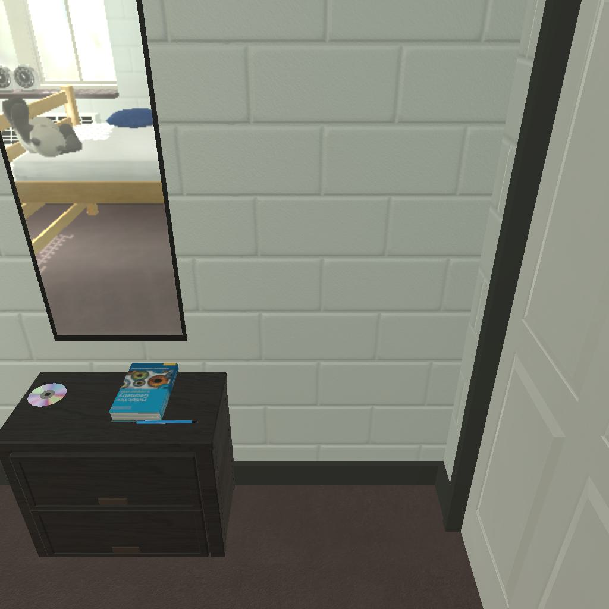

---------------------------------------------------------task: 8---------------------------------------------------------
--------------------------------------------------------------------------------------------------------------------------------------------------------------------
--------------------------------------------------------------------------------------------------------------------------------------------------------------------
Step:--------------------------------------------------------------------------3-------------------------------------------------------------------------------
----------------------------------------
VLM Prompt:
Image1:
**Instruction**
1. Analyze the provided image to identify all visible household objects, focusing on those relevant to the task description "put a laptop in desk."
2. Use the analysis of the image and the task hint "The agent must find an object of the desired type, pick it up, find the correct location to place it, and put it down there." to answer the question: what is the most reasonable action in the choices for the task description "put a laptop in desk"?
4. Decide and write the answer using the template: The answer is: (i): , where i is the real number. If there is no desired object in the image, search every place based on **Initial Observation** to find the object. And if no one is exactly correct, choose a similar answer.
**Initial Observation**
You are in the middle of a room. Looking quickly around you, you can see bed (1), garbagecan (1), desk (1), sidetable (1), drawer (1-5), laundryhamper (1)
**Answer Choices**
(1): go to bed 1
(2): go to garbagecan 1
(3): go to sidetable 1
(4): go to drawer 2
(5): go to laundryhamper 1
(6): go to drawer 3
(7): go to drawer 4
(8): go to drawer 5
(9): open drawer 1
(10): close drawer 1
(11): take book 1 from drawer 1
(12): take cd 1 from drawer 1
(13): take pen 2 from drawer 1
**Answer**
Let's think step by step by following the instructions.
----------------------------------------
----------------------------------------
Original Response:
First, we analyze the image for visible household objects related to "put a laptop in desk." We can see a sidetable with a CD and a book on it, but no laptop. There is also a drawer which could potentially contain a laptop, but it is not visible in the image.
Based on the **Initial Observation**, we have a desk in the room, which is the correct location to place a laptop. However, we do not see a laptop in the image, so we must search every place based on the initial observation to find the object.
Out of the answer choices given, the most reasonable action to find an object like a laptop would be to go to and open drawers since laptops are commonly stored in drawers or desks. The sidetable already has its contents visible in the image, and it is unlikely that a laptop would be in the garbagecan, bed, or laundry hamper.
Since we need to find a laptop and there are multiple drawers to check, we'll start with the first one. The answer is: (9): open drawer 1.
----------------------------------------
----------------------------------------
>>> Refine Original VLM Response and Get Pure Action: open drawer 1
----------------------------------------
-----------------------------------------------------------------
Running time: 11.198894023895264 seconds
Total Money: 1.9923899999999999
-----------------------------------------------------------------
-----------------------------------------------------------------
Text Observation:You open the drawer 1. The drawer 1 is open. In it, you see a book 1, a cd 1, and a pen 2.
-----------------------------------------------------------------
UNSUCCEED